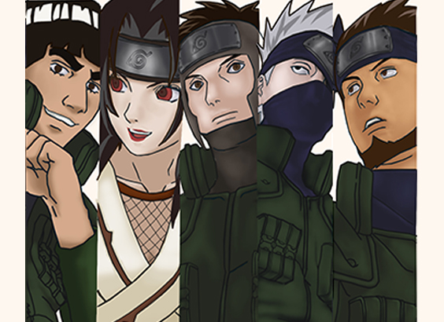

LOS JOUNIN
Un Jōnin (上忍, Jōnin) es un shinobi de Nivel Alto muy calificado. Para convertirse en Jōnin el Ninja en cuestión ha de tener control sobre un mínimo de dos tipos de naturaleza del chakra o tener una especialidad referido a algún tipo de técnicas (como Kurenai en Genjutsu o Guy en Taijutsu), pero se sabe que los ninjas de este rango (al que pertenecen Kakashi Hatake, Might Guy, Kurenai Yūhi, Asuma Sarutobi, etc.) tienen la posibilidad de continuar haciendo misiones con otros ninjas de grado alto (como lo hacen Genma Shiranui y Raidō Namiashi ), formar un grupo con 3 Genin a su responsabilidad (como Kakashi, Asuma, Kurenai o Guy ) o entrar en el ANBU. Estos Ninja son los únicos a los que se les puede confiar una misión rango A o S, que suelen ser de alto peligro como asesinatos o espionaje de una aldea rival.
